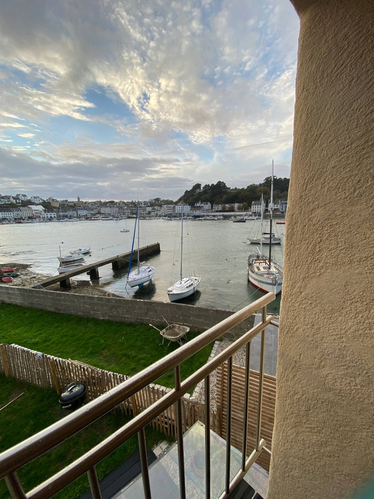
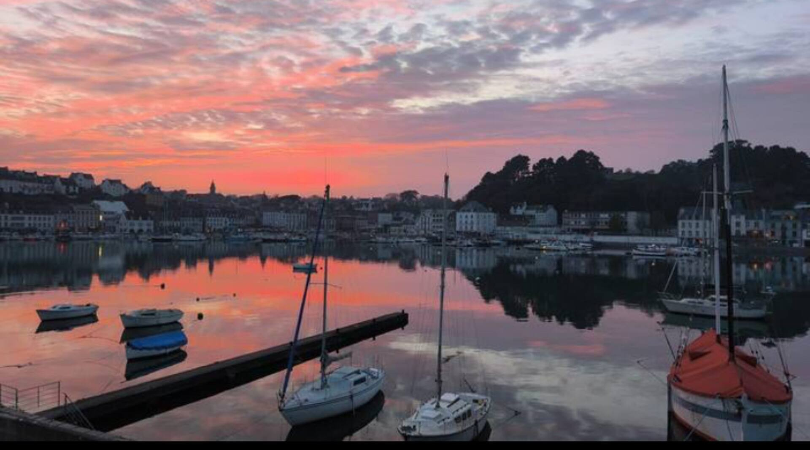
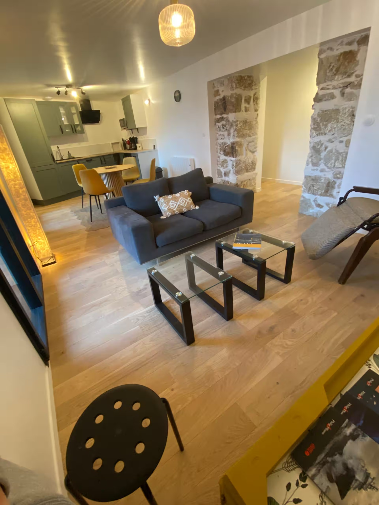
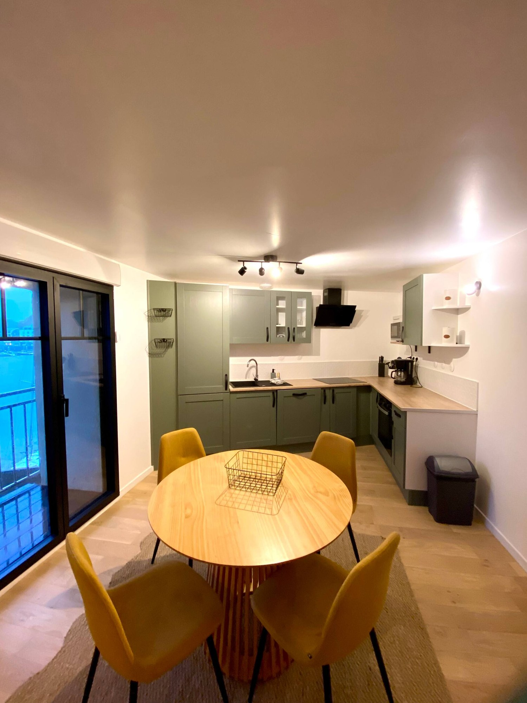
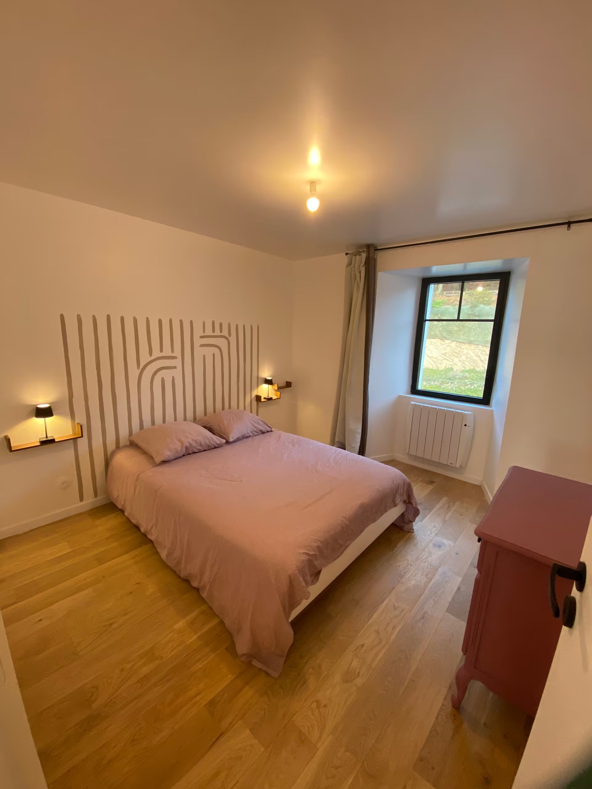
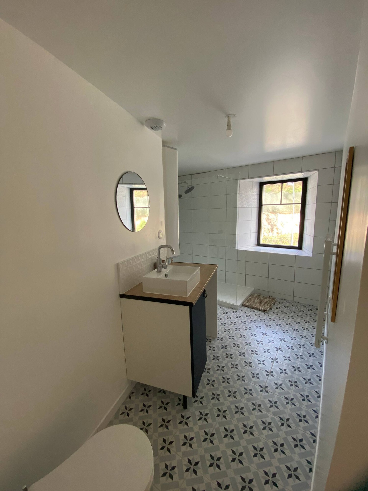
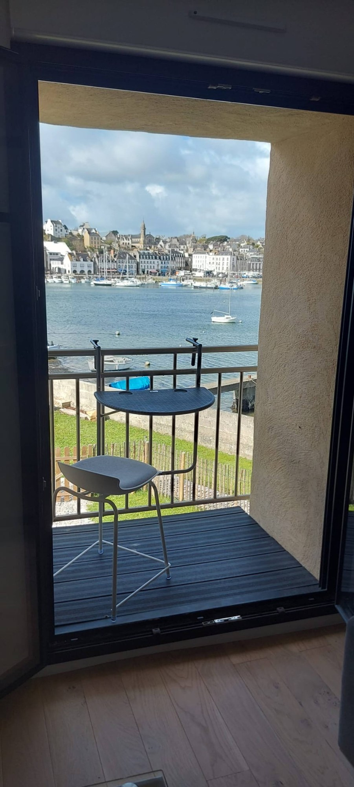
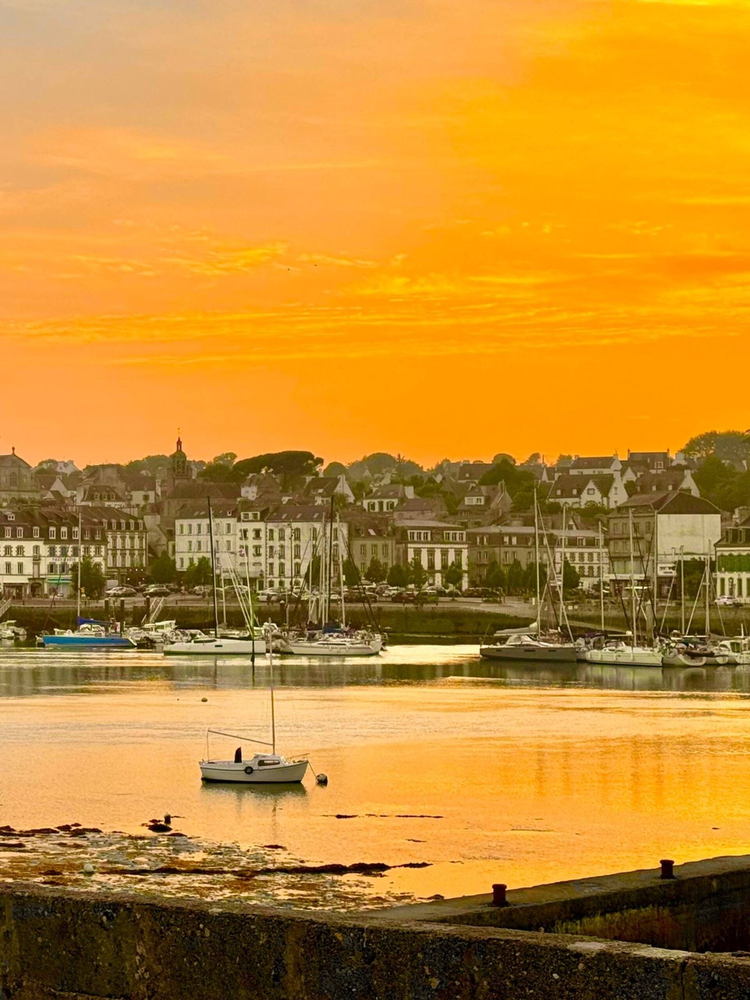
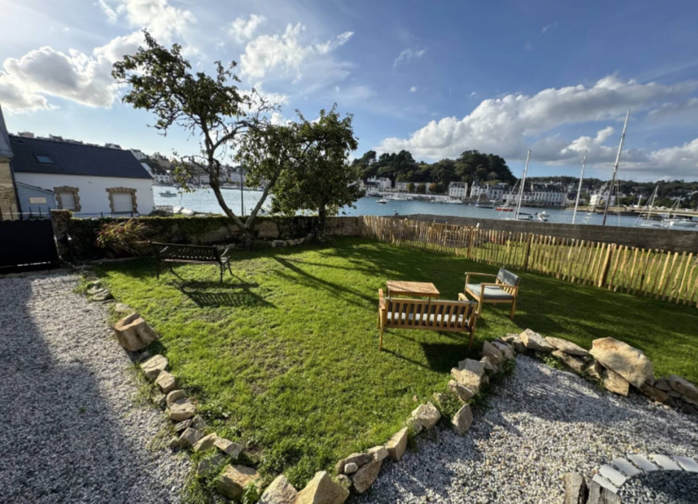

Les balcons
Des vrais postes d’observation sur l’estuaire, parfait pour le café du matin ou le verre de fin de journée.
balcon · lumière · port
Un apartamento luminoso para ver vivir el puerto, tomarse el tiempo y disfrutar de la costa bretona desde la mañana hasta el atardecer.

l’esprit du lieu
Desde el balcón, el paisaje cambia sin cesar: barcos apoyados en la marea baja, el puerto que cobra vida, nubes que pasan deprisa y luego la luz de la tarde cayendo sobre Audierne.
En el interior, el apartamento sigue siendo sencillo, claro y confortable. Se viene para descansar, cocinar algunos productos del mercado, leer, teletrabajar unas horas o volver a explorar las playas y senderos del Cap Sizun.
C’est l’appartement le plus naturellement tourné vers la contemplation : idéal pour una estancia en pareja ou en famille pour quelques jours pour respirer face à la mer.
ce qu’on aime
Des vrais postes d’observation sur l’estuaire, parfait pour le café du matin ou le verre de fin de journée.
Quand le ciel se colore, le port devient presque un tableau vivant.
Cocina equipada abierta al salón, con horno multifunción, microondas y lavavajillas. Smart TV, internet de fibra, salón luminoso con dos balcones al mar.
Deux chambres avec grands lits, une chambre avec lit simple, salle de bain avec douche et lave-linge.

au rythme du goyen
El día puede empezar tranquilamente en el balcón y continuar hacia los mercados, los cafés del puerto, las playas, la Pointe du Raz o las pequeñas carreteras del Finistère.
Le soir, l’appartement retrouve son rôle le plus simple : un endroit calme où regarder la lumière baisser sur l’eau.
photos & ambiances
Des images simples pour montrer le logement tel qu’il est, tout en laissant respirer l’atmosphère du bord de mer.







todo el año
El verano es evidente, pero el otoño y la primavera suelen ser los momentos más bonitos: menos gente, más calma, luces cambiantes y largos paseos junto al agua.
voir aussi